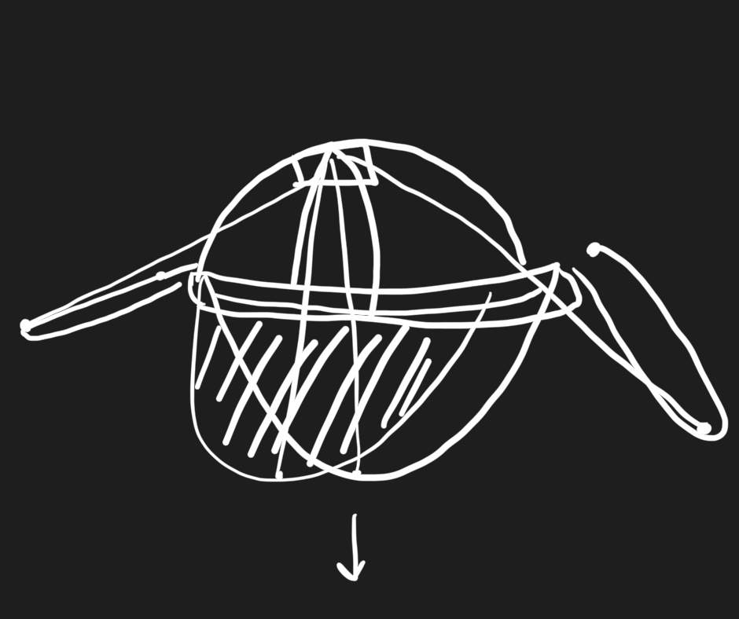
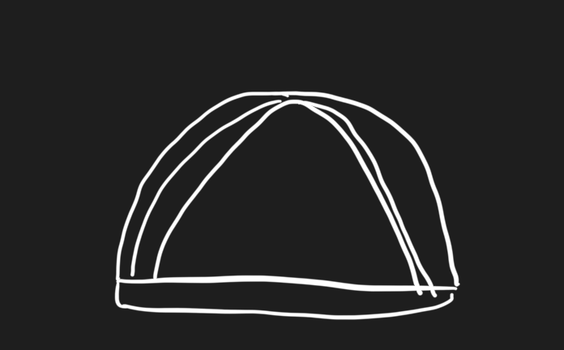
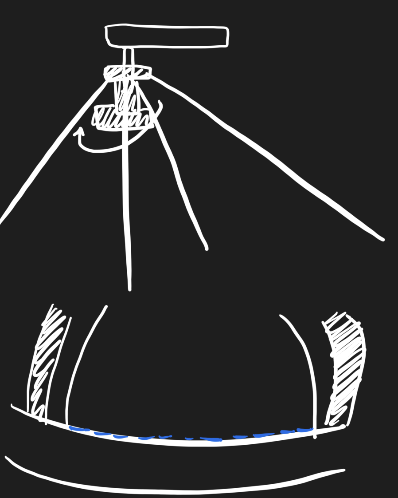
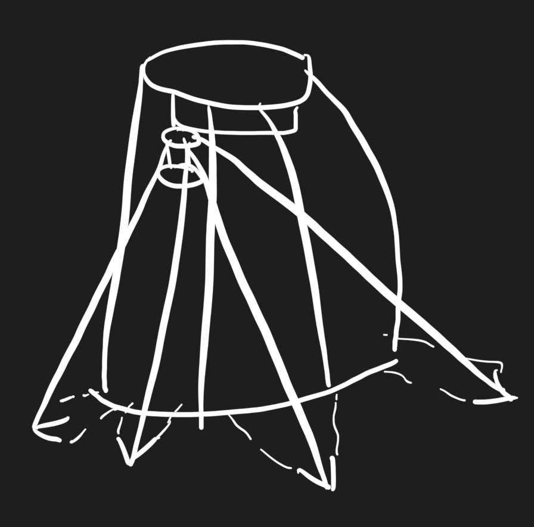
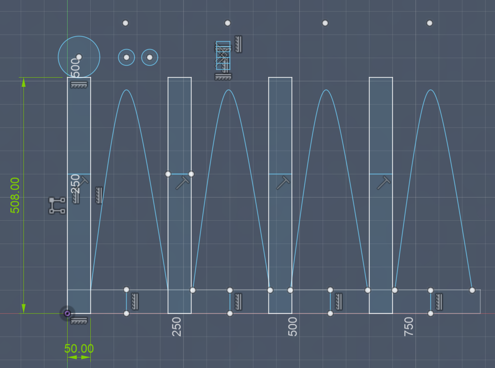
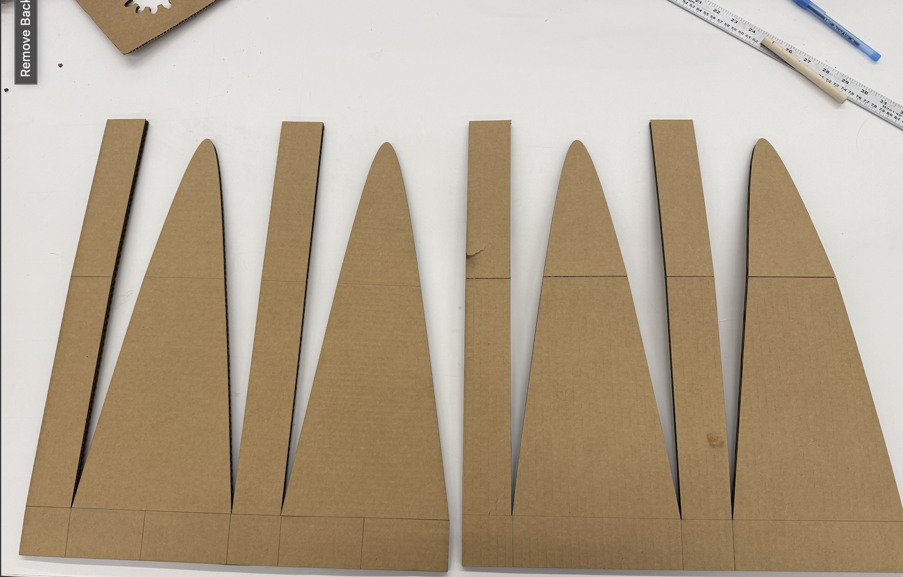
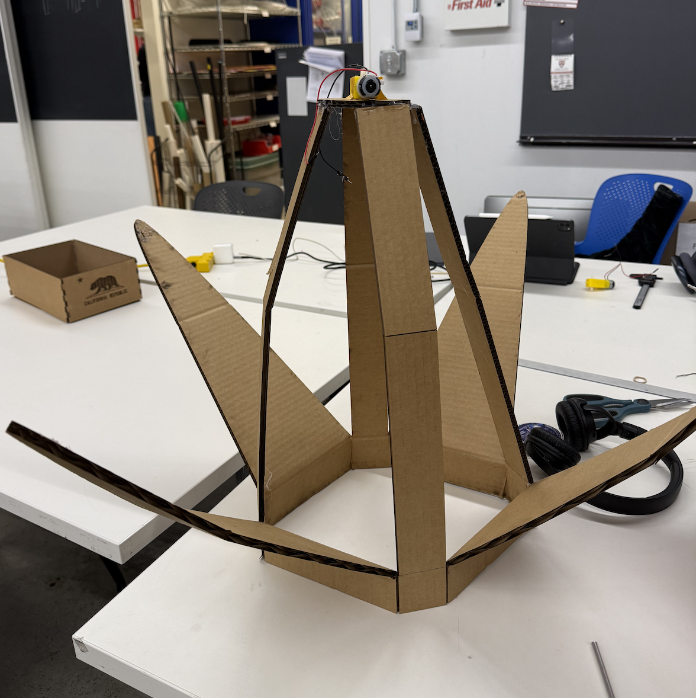
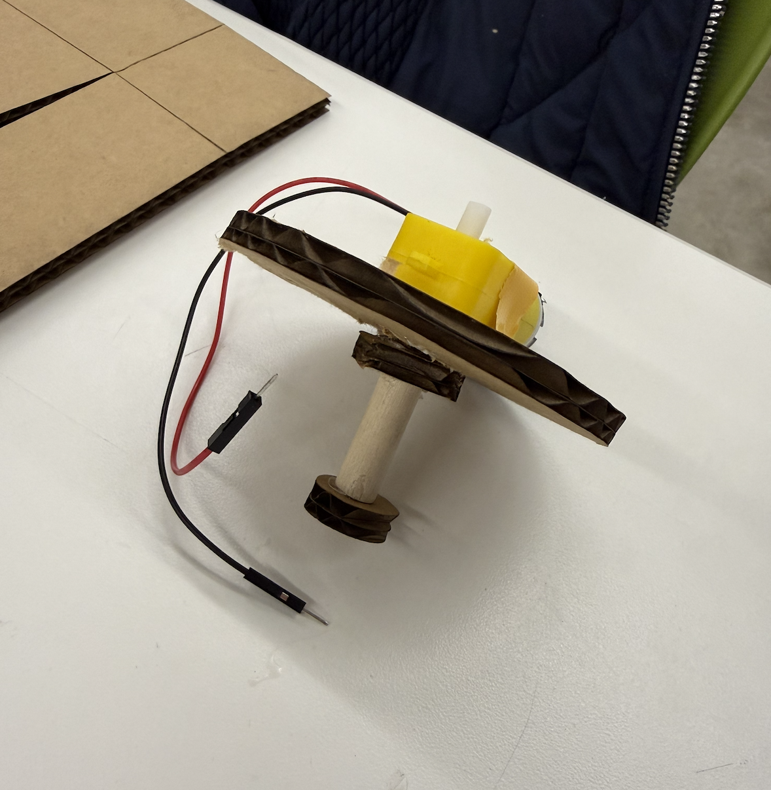

Week 3: Hand Tools and Fabrication
Background
My inspriation from this project was the Goodplace TV Show, where Sean (a demon) cocoons. Esentially, when anyone gets too emotional around him, he seals himself into a large cocoon. Using a motor, I wanted to replicate this ridiculousness to enclose one's head in a similar way.
1) Sketching Ideas




I measured my head and thought of my design.
2) CAD Files and Information

It took me a few iterations of design, but I finally got the proportions right.
Download "Kinetic Sculpture" File3) Assembly



I had to cut my CAD file in half to print it all. Then the strings got tangled with the tiny "bobbin" motor spinning thing that is shown above, so I adjusted it to be larger.
4) The Final Product!


After gluing together the components, tying the string, and recreating the longer bobbin, the design worked! It's finicky -- if I had more time, I would 1) make sure the strings don't get tangled, 2) make the "bobbin" more stable, and 3) paint my design!